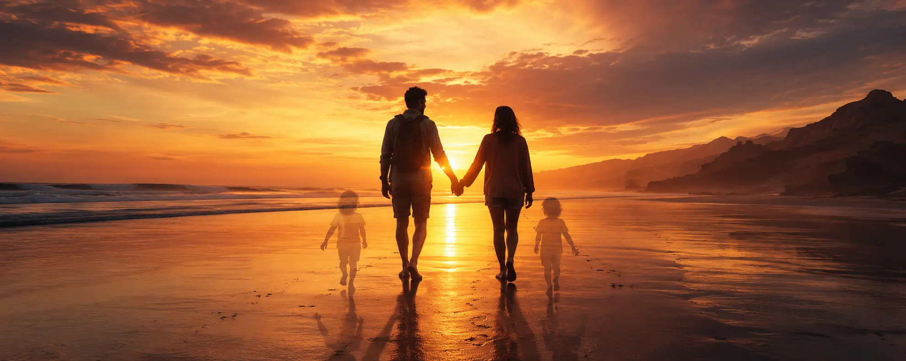

Parfois, une simple journée suffit pour commencer une aventure que l'on n'avait pas prévue.
Vidolta est né simplement.
D'abord comme une idée parmi d'autres, puis comme une envie de construire quelque chose qui puisse durer dans le temps.
Au fil des jours, des pages, des destinations et des découvertes, cette idée a grandi jusqu'à devenir bien plus qu'un simple projet.
Aujourd'hui, Vidolta est le reflet d'une passion : celle de découvrir le monde, de vivre des expériences uniques et de créer des souvenirs qui nous accompagnent toute une vie.
Tout a commencé par une passion : celle de découvrir.
Découvrir de nouvelles villes.
Découvrir de nouveaux horizons.
Découvrir des cultures, des paysages, des histoires et des lieux qui marquent l'imaginaire.
Au fil du temps, cette passion est devenue un véritable amour du voyage, de l'aventure et des émotions que seule la découverte peut offrir.
Et de cet amour est née une idée.
Cette idée porte aujourd'hui un nom : Vidolta.
Chaque ville possède une personnalité unique.
Certaines impressionnent par leur architecture.
D'autres fascinent par leur histoire.
Certaines font rêver à travers le cinéma, la musique, le sport ou les grands événements qui les animent.
Mais ce qui rend une ville inoubliable, ce ne sont pas seulement ses monuments.
Ce sont aussi les moments que l'on y vit.
Une promenade dans un quartier inconnu.
Un festival au bout du monde.
Un concert inattendu.
Un match dont on se souviendra toujours.
Un coucher de soleil partagé avec les bonnes personnes.
Ce sont ces instants qui donnent une âme aux voyages.
Vidolta n'a jamais eu pour ambition d'être un simple guide touristique.
L'objectif a toujours été d'aller plus loin.
Derrière chaque destination se cachent des événements, des spectacles, des festivals, des expériences, des lieux de tournage, des traditions et des rencontres qui rendent chaque ville unique.
Un voyage n'est pas seulement un endroit que l'on visite.
C'est une expérience que l'on vit.
C'est pourquoi Vidolta réunit aujourd'hui des guides de voyage, des cartes thématiques, des idées d'activités, des événements, des expériences et des conseils destinés à aider chacun à découvrir une destination autrement.
Les plus beaux souvenirs ne sont pas toujours les plus spectaculaires.
Ils naissent souvent des premières fois.
Le premier voyage.
La première grande ville découverte.
Le premier festival.
Le premier concert.
Le premier voyage partagé avec quelqu'un qui compte.
Les années passent.
Les destinations changent.
Mais certaines émotions restent intactes.
Nous oublions parfois les détails.
Nous n'oublions presque jamais ce que nous avons ressenti.
Parce que le monde regorge d'endroits extraordinaires.
Parce que certaines expériences méritent d'être vécues au moins une fois.
Parce qu'un événement peut parfois donner envie de découvrir une ville.
Parce qu'une ville peut parfois changer une vie.
Et parce que les souvenirs les plus précieux naissent souvent lorsque la découverte d'un lieu rencontre une émotion forte.
Vidolta existe pour inspirer ces découvertes.
Pour aider chacun à trouver sa prochaine destination, sa prochaine expérience ou simplement ce moment particulier dont il se souviendra encore dans plusieurs années.
Chaque voyageur possède une histoire. Un paysage qui l'a marqué, une rencontre inattendue, un festival mémorable, un concert inoubliable ou une ville qu'il n'a jamais vraiment quittée.
Peut-être que votre prochain souvenir commence aujourd'hui. Peut-être qu'il commence ici.
Explorer les destinationsOne Day In Your Life
De la passion naît l'amour.
De l'amour naît la vie.
D'une passion pour la découverte est né l'amour du voyage.
De cet amour est née Vidolta.